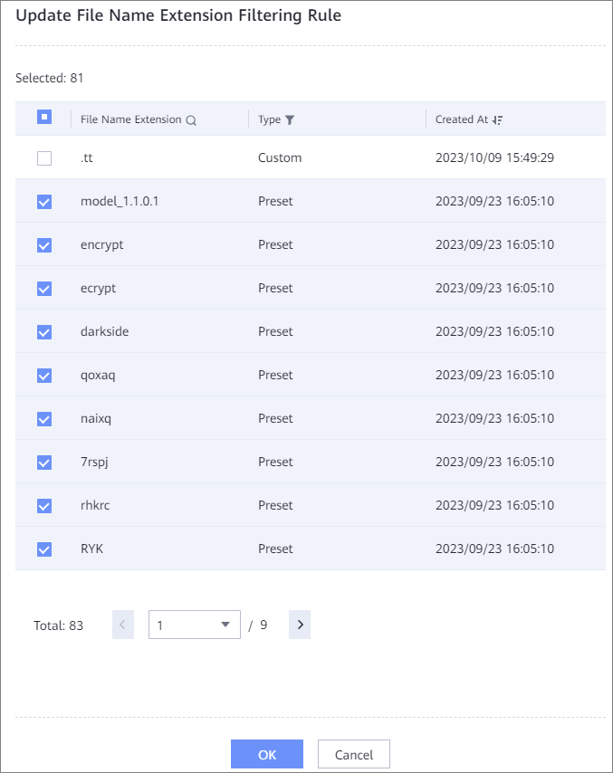

This section describes how to change the file name extension filtering rule associated with a file system. After the change, the new File Name Extension Filtering Rule takes effect when the file name extension status changes to Applied.
If you need to add a file name extension to be intercepted to the file system, create the File Name Extension Filtering Rule by referring to Creating a File Name Extension Filtering Rule.
The Update File Name Extension Filtering Rule dialog box is displayed. All file name extension filtering rules associated file systems are selected by default. You can select or deselect a file name extension filtering rule in the list as required.
